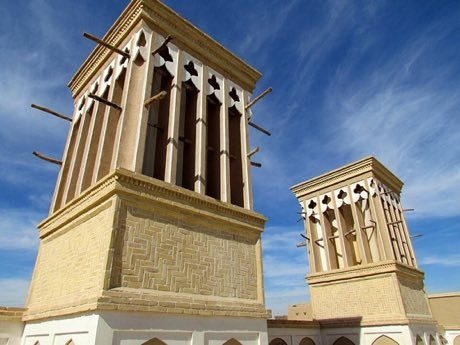
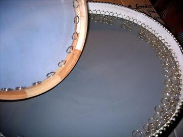
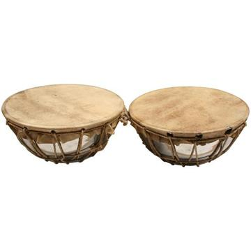

Home / Living Traditions / Persia, Caucasus and Central Asia
Encyclopedia ID 229
Badgir windcatcher cooling puzzle
Also known as بادگیر

Shape the tower openings, shafts and a water pool so desert wind flows down and cools rooms; route air to every room with limited bricks.
Heritage note
Part of the living heritage of Iran.
Origins
A living tradition passed from person to person; it is not tied to a single dated origin. It belongs to the cultural world of Persia, Caucasus and Central Asia.
Sources
Related entries

Santur Hammer Strings
Iran +3 · Musical instruments
Persian Carpet Knotting
Iran +1 · Crafts and makingPlay preview · in the Textile Crafts of the World app

Muqarnas stalactite vault builder
Iran · Crafts and making
Khatam inlay star pattern workshop
Iran · Crafts and making
Tombak goblet drum rhythms
Iran · Musical instrumentsPlay preview · in the Hand Drums of the World app
More from Iran

Astrolabe: reading the sky
Iran · Toys
Bayt-bazi: verse chain
Iran · Performance and storytellingPlay preview · in the Story & Theatre of the World app


Flower or Empty
Iran · Street and playground games